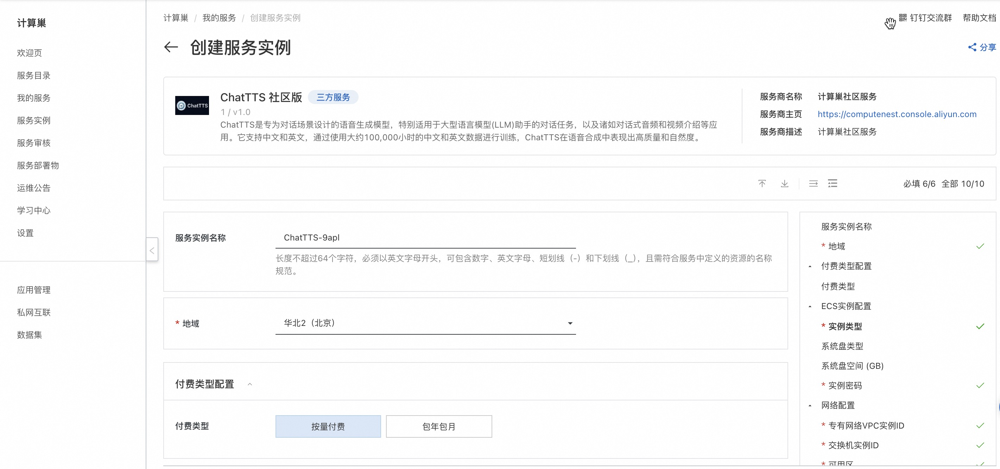
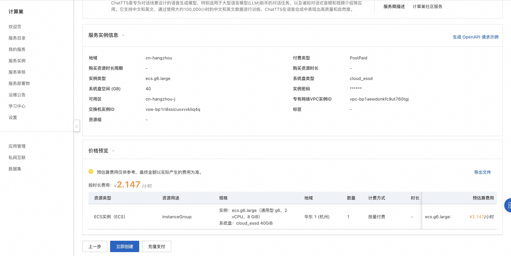
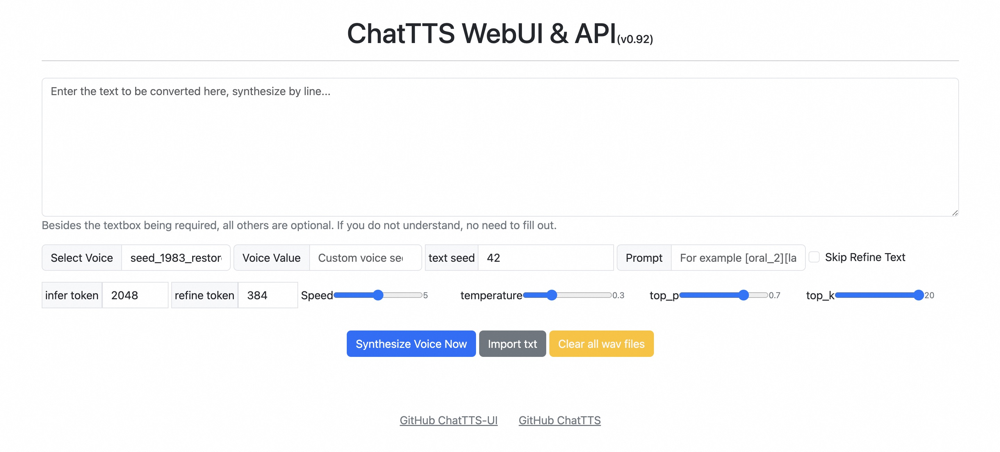

快速部署 ChatTTS 社区版
概述
ChatTTS是专为对话场景设计的语音生成模型，特别适用于大型语言模型(LLM)助手的对话任务，以及诸如对话式音频和视频介绍等应用。它支持中文和英文，通过使用大约100,000小时的中文和英文数据进行训练，ChatTTS在语音合成中表现出高质量和自然度。
ChatTTS官方网站：https://chattts.com/
计费说明
ChatTTS在计算巢上的费用主要涉及：
- 所选vCPU与内存规格
- 磁盘容量
- 公网带宽
计费方式：按量付费（小时）
预估费用在创建实例时可实时看到。
部署架构
ChatTTS社区版是单机部署架构。
RAM账号所需权限
ChatTTS服务需要对ECS、VPC等资源进行访问和创建操作，若您使用RAM用户创建服务实例，需要在创建服务实例前，对使用的RAM用户的账号添加相应资源的权限。添加RAM权限的详细操作，请参见为RAM用户授权 。所需权限如下表所示。
| 权限策略名称 | 备注 |
|---|---|
| AliyunECSFullAccess | 管理云服务器服务（ECS）的权限 |
| AliyunVPCFullAccess | 管理专有网络（VPC）的权限 |
| AliyunROSFullAccess | 管理资源编排服务（ROS）的权限 |
| AliyunComputeNestUserFullAccess | 管理计算巢服务（ComputeNest）的用户侧权限 |
| AliyunCloudMonitorFullAccess | 管理云监控（CloudMonitor）的权限 |
部署流程
- 单击部署链接，进入服务实例部署界面。
-
选择新建ECS实例并根据界面提示配置参数，配置完成后点击下一步：确认订单。

-
点击立即创建，等待服务实例创建完成。

- 服务实例创建成功后，进入服务实例详情页。在概览页可获取ChatTTS登录信息。

- 点击外网面板地址访问ChatTTS服务。

© 2009-2022 Aliyun.com 版权所有